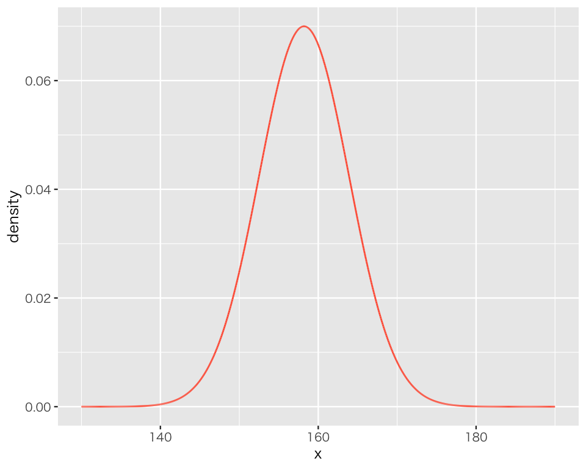

8 連続分布
今回の目標
- 経験分布の可視化について理解する
- 連続分布について理解する
まず、tidyverseパッケージを忘れずに読み込もう。
Windows ユーザ（大学PCを含む）は、
library(fontregisterer)
theme_set(theme_gray(base_size = 9,
base_family = "Yu Gothic"))を実行する。
Linux ユーザ（IPAexフォント が利用可能である場合）は、
theme_set(theme_gray(base_size = 9,
base_family = "IPAexGothic"))を実行する。
macOS ユーザは、
theme_set(theme_gray(base_size = 9,
base_family = "HiraginoSans-W3"))を実行する。
8.1 経験分布
今回の実習で使うデータを用意する。 fake_height_round.csv をダウンロードし、以前作った data フォルダの中に保存する。ファイル (fake_height_round.csv) をここ から手動でダウンロードして、プロジェクト内の data ディレクトリに移動する。 大学のパソコンでは、ダウンロードしたファイルが「ダウンロード」フォルダに保存されているので、エクスプローラーを開き、対象ファイルを「ダウンロード」からプロジェクト内の「data」フォルダに移動する。
dataフォルダに対象ファイルがあるかどうか確認する。以下のコマンドで、プロジェクト内の data フォルダに保存されているファイルを一覧表示することができる。
dir("data")[1] "fake_data_01.csv" "fake_height_round.csv" "fake_score.csv" fake_height_round.csv があることが確認できたら、データを読み込もう。
D <- read_csv("data/fake_height_round.csv")データを読み込んだら、データの中身を確認しよう（課題を提出するときはこの作業を省略してよいが、自分でデータを扱うときには必ず何らかの方法でデータの中身を確認すること）。
glimpse(D)Rows: 2,000
Columns: 2
$ gender <chr> "female", "female", "female", "female", "female", "female", "fe…
$ height <dbl> 169.4, 148.0, 166.7, 151.6, 148.3, 157.5, 167.3, 150.9, 151.7, …以下の2つの変数があることがわかる。
-
gender: 性別 -
height: 身長 (cm)
gender の内容をもう少し詳しく確認してみよう。
table(D$gender)
female male
1000 1000 女性 (female) と男性 (male) が1000ずつあることがわかる。
ここでは、女性のみを取り出して使おう。 ある条件によってデータの一部をとりだすときは、dplyr::filter() という関数を使う。 ここでは、女性を、すなわち gender の値が female であるもののみを、以下のようにして抽出する。
D_f <- D |>
filter(gender == "female")
#D_f <- filter(D, gender == "female") # パイプを使わない方法女性のみを取り出した D_fというデータフレームのgenderを確認してみよう。
table(D_f$gender)
female
1000 すべて女性であることが確認できる。
続いて、女性の身長 (height) を可視化してみよう。ビンの幅 (binwidth) は2 (cm) にする。
hist_1 <- ggplot(D_f, aes(x = height)) +
geom_histogram(binwidth = 2,
boundary = 140,
color = "black")
plot(hist_1)このグラフの縦軸は count すなわち度数である。よって、このグラフの長方形の面積は割合を表していない（面積を合計すると1を超えるのが明らかである）。
これを経験分布にするためには、縦軸を密度 (density) にする必要がある。（前のトピックでも既に登場しているが）ggplot で縦軸を密度にするためには、after_stat(density) を次のように使う。
hist_2 <- ggplot(D_f, aes(x = height,
y = after_stat(density))) +
geom_histogram(binwidth = 2,
boundary = 140,
color = "black")
plot(hist_2)これで縦軸が密度になり、経験分布を可視化することができた。
軸ラベルを日本語に変えよう。
最後に、このデータの分布関数を可視化しよう。 ggplotで経験分布の分布関数をグラフにするには、stat_ecdf() を使う。 “ecdf” とは、empirical cumulative distribution function すなわち経験累積分布関数のことである。 次のようにする。
ecdf_1 <- ggplot(D_f, aes(x = height)) +
stat_ecdf() +
geom_hline(yintercept = c(0, 1),
color = "gray") +
labs(x = "身長 (cm)", y = "割合")
plot(ecdf_1)geom_hline() で、割合が0と1の位置に灰色の実線を加えている。 「身長が\(x\)以下の割合」は、（当たり前だが）\(x\)が大きくなるにつれて0から1に近づき、身長175cm付近では1に見える。実際、このデータの身長の最大値は174.6cmなので（各自で確認すること）、その時点で縦軸の値は1になっている。
8.2 連続分布
8.2.1 例：女性の身長データ
上で使ったデータでは、身長がcm単位で小数第1位まで記録されている。つまり、0.1cm (1mm) 単位で身長の違いを測ることができる。念のため、最初の10人の身長を確認してみよう。
D_f$height |>
head(n = 10) [1] 169.4 148.0 166.7 151.6 148.3 157.5 167.3 150.9 151.7 154.0小数第1位まで記録されていることがわかる。
1人目の身長は169.4 (cm、以下では単位を省略する）だが、これは、この人の身長がぴったり169.4であることを必ずしも意味しない。身長計の目盛りが0.1cm単位だとすると、169.41、169.42、169.4178、169.3992 などはいずれも記録上は「169.4」になるだろう。つまり、身長というのはある範囲の実数であり、私たちがそれを記録する際に記録の精度が落ちていると考えられる（「精度が落ちる」とは言っても、身長を測る目的 [例えば、洋服のサイズを選ぶ] によっては、0.1cmの差が測れれば十分である）。このとき、「169.4」が意味するのは、\(169.35 < x \leq 169.45\) の範囲にある\(x\) であると考えることができる（この区切りは一例であり、この区切りが絶対ではない）。 つまり、身長というのは、記録上は離散値だが、その背後には連続的な値が潜んでいると見ることができる。
この「連続的な値」がどのようなものか、可視化してみよう。 上で作った経験分布のヒストグラムに、密度曲線 (density curve) を重ね描きする。 geom_density() を使って次のようにする。
hist_2b <- hist_2a +
geom_density(color = "royalblue",
linewidth = 1.5)
plot(hist_2b)曲線によって、経験分布を連続的に捉えることができた。
8.2.2 正規分布
連続分布として代表的な分布が、正規分布 (normal distribution, Gaussian distribution) である。正規分布についての詳細は以降のトピックで説明するが、今回は成人女性の身長が正規分布に従うと仮定して、正規分布の密度曲線を上で作った経験分布のヒストグラムに重ねて描いてみよう。
上で確認した女性の身長データの平均値は約158.2、標準偏差は 5.7 である（各自で確認すること）。そこで、平均が158.2、標準偏差が5.7の正規分布を利用することにする。この正規分布を \(\mbox{Normal}(158.2, 5.7)\)と表記する。
一般的に、平均\(\mu\)（ミュー (mu) と読む）、標準偏差が\(\sigma\)（シグマ (sigma)）の正規分布を \[
\mbox{Normal}(\mu, \sigma)
\] と表記する。しかし、統計学のほとんどの教科書では、標準偏差の代わりに分散を使って \[
\mbox{Normal}(\mu, \sigma^2)
\] で正規分布を表記しているので注意されたい。分散と標準偏差は1対1に対応するので、どちらでも同じである。標準偏差と分散のどちらが指定されているかは、文脈から読み取る必要がある。Rで正規分布を扱う場合は、平均 (mean) と標準偏差 (sd) で正規分布を特定するので、この授業では標準偏差を使って正規分布を表現する。
平均が\(\mu\)で標準偏差が\(\sigma\)正規 (normal) 分布\(\mbox{Normal}(\mu, \sigma)\) をQuarto文書で書くためには、以下の内容を文として、つまり、コードチャンクの外に書いて render すればよい。
$\mbox{Normal}(\mu, \sigma)$\(\mbox{Normal}(158.2, 5.7)\)の密度関数を\(f\)として、\(f(x)\)の値を求めよう。正規分布の密度関数はdnorm() なので、\(f\)としてdnorm(mean = 158.2, sd = 5.7) を使う。
これを使うためには、まずこの関数に入力する\(x\)の値が必要である。。上で使った身長のデータは138から175の範囲の値を取っているので、少し余裕をもって、130から190の範囲で\(x\)を作ろう。作る\(x\)の個数を\(N\)として、まずは\(N=10\)でやってみる。
N <- 10
x <- seq(from = 130, to = 190, length.out = N)これで10個のxができた。
x [1] 130.0000 136.6667 143.3333 150.0000 156.6667 163.3333 170.0000 176.6667
[9] 183.3333 190.0000これを、dnorm() に渡す。
dens <- dnorm(x, mean = 158.2, sd = 5.7)これで、10個の\(x\)に対応する\(f(x)\)が計算できた。
dens [1] 3.388759e-07 5.571801e-05 2.332710e-03 2.486772e-02 6.750276e-02
[6] 4.665705e-02 8.211515e-03 3.679929e-04 4.199194e-06 1.220120e-08これをグラフにしたい。そのために、まずはデータフレーム (tibble) を作る。
D1 <- tibble(x = x,
density = dens)これを図にする。
p_dens_1 <- ggplot(D1, aes(x = x, y = density)) +
geom_line() +
geom_point()
plot(p_dens_1)密度を図にすることはできたが、「連続」には見えない。その原因は、\(x\)として取った点の数が少なすぎた（たったの10個！）ところにある。（実際には有限個しかとらないのに）連続であるかのように見える図を作るためには、かなり多くの点が必要である。
そこで、\(N\)を10から10万 (\(10^5\)) に増やして再挑戦しよう。
N <- 1e5 # 1e5 = 10^5 = 100000
x <- seq(from = 130, to = 190, length.out = N)
D2 <- tibble(x = x,
density = dnorm(x, mean = 158.2, sd = 5.7))
p_dens_2 <- ggplot(D2, aes(x = x, y = density)) +
geom_line(color = "tomato")
plot(p_dens_2)
（少なくとも見かけ上は）滑らかな曲線が得られた。
最後に、これを経験分布のヒストグラム上に重ねよう。
hist_2c <- hist_2a +
geom_line(data = D2, aes(x = x, y = density),
color = "tomato",
linewidth = 1.2)
plot(hist_2c)
こうして見ると、\(\mbox{Normal}(158.2, 5.7)\)と実際のデータがよく合致しているように見える。 言い換えると、得られたデータは\(\mbox{Normal}(158.2, 5.7)\)でよく近似できているようだ。
生のデータはばらばらな値を取っている。しかし、経験分布が\(\mbox{Normal}(158.2, 5.7)\)で近似できるということは、大雑把に言えば、「データは\(\mbox{Normal}(158.2, 5.7)\)に従う」とまとめることができる。このように、経験分布（データ）を一言でまとめるというのが、連続分布の1つの使い方である。
8.3 実習課題
-
fake_height_round.csvを使い、男性の身長の経験分布をヒストグラムと分布関数を使って可視化しなさい（つまり、図を2つ作りなさい）。その際、各軸に適切なラベルを日本語で付けなさい。 - 1の身長が取りうる値は不可算個だと仮定して、1で作った経験分布のヒストグラムに、密度曲線を当てはめた図を作りなさい。
- 1で作った経験分布のヒストグラムに、正規分布の密度曲線を重ねて描き、正規分布で近似できるかどうか、できるとすればどんな正規分布で近似できるか説明しなさい。